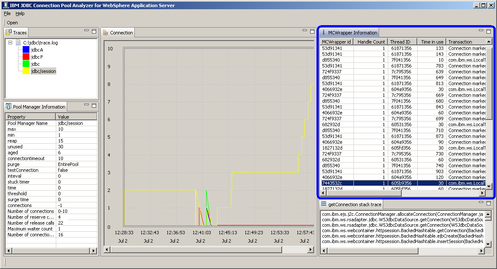

MCWrapper Information View
MCWrapper Information View is located on upper right part of the tool.
Handle count,MCWrapper ID,thread ID,transaction,time in use and release time are displayed
By clicking on any MCWrapper ID, getConnection Java stack trace can be shown in getConnection stack trace view
